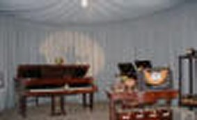

Broadcasting Museum
When the first Cork radio station was set up, the top floor of the governor's house was used for studios, and this same floor is now planned to house RTE's broadcasting museum. It will trace the history of radio and television in Ireland. Broadcasting artefacts and details of noted presenters and performers will be designed for general and special interest visitors.
~Previous~ ~Home~